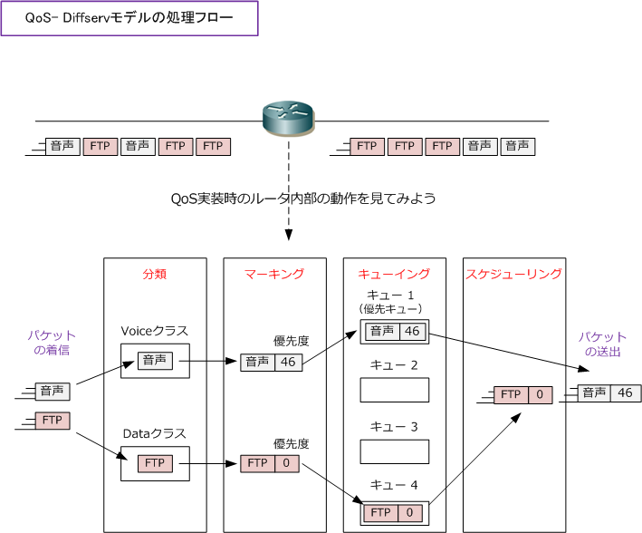
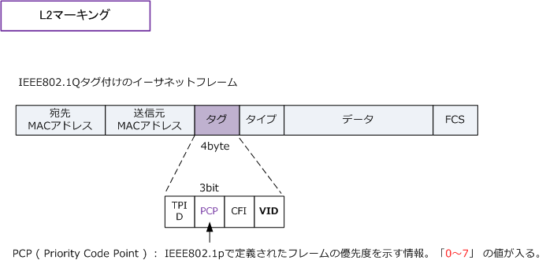
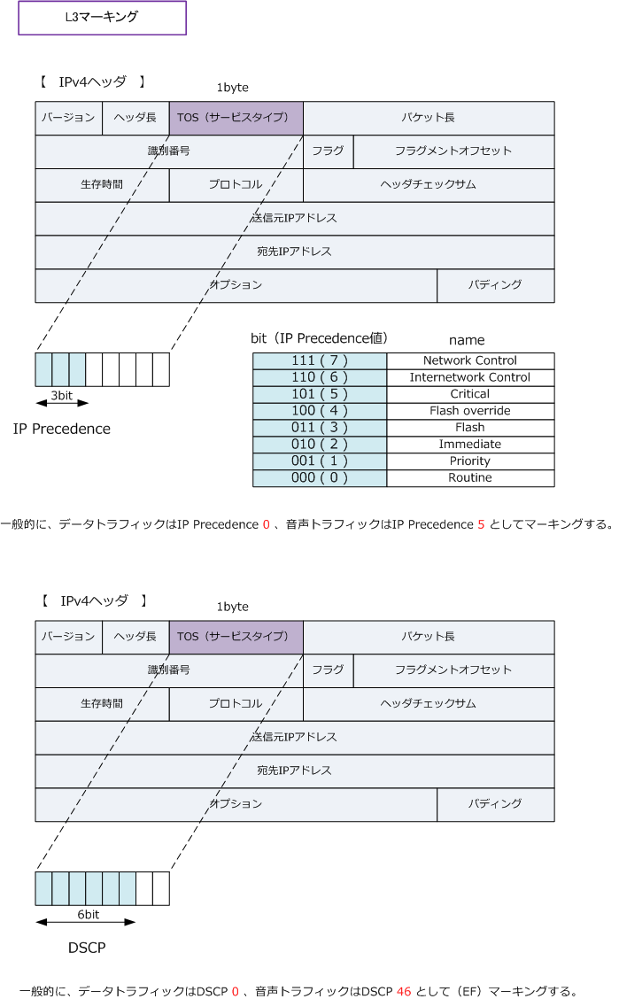
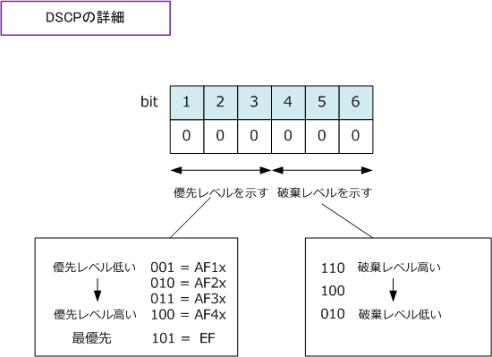

QoS - DiffServ QoS Model
QoS - DiffServモデルの処理フロー
DiffServモデルでは「?@分類 ?Aマーキング ?B キューイング ?Cスケジューリング」の順番で処理されます。 ルータにFTPトラフィックや音声トラフィックが混在して着信した時に、どのような処理が行われて音声 トラフィックが優先され送出していくのかを見ていきます。説明図を分かりやすくするため1パケットずつ。

QoSは、上図フローを理解できればOK。以下に詳細に解説していますが、はじめてQoSを学習する人は何となくの理解でOK。 QoSの実装はメーカーの機器によって異なることもあり、その機器に実際に実装していくタイミングで深く理解していければOK。
DiffServモデルの処理フロー（分類）
ルータやスイッチなどのネットワーク機器のインターフェースに着信したパケットを分類するためには、 IPアドレス、TCP/UDPポート番号、CoS / DSCP / IP Precendence値などの情報をもとに分類します。
DiffServモデルの処理フロー（マーキング）
各パケットに対して優先度を付けます。マーキングの方法には、L2でのマーキングとL3でのマーキング があります。スイッチではL2またはL3でのマーキングが可能です。ルータでは、L3のマーキングのみが 可能です。L2マーキングの場合、Ethernet LANのトランクされた各リンク上でしか情報が保持されない ことからエンドツーエンドで優先度の情報を保持し続けられるL3マーキングを使用することが多いです。
L2マーキングではCoS値が使用されます。CoS値は802.1Qタグ付けフレームのタグの中のフィールドで 定義されます。3ビットのフィールドで 0 ～ 7 の8段階の優先度を定義することができます。

L3マーキングでは「IP Precedence値またはDSCP値」が使用されます。これらの値はIPv4ヘッダの中の ToS（Type of Service）フィールドで定義されます。ToSフィールドでは8ビットあるのですがそのうちの 先頭3ビットだけを使用してマーキング値を表すのがIP Precedenceであり、先頭6ビットを使用するのが DSCP値となります。IP Precedence0～7の8段階で優先度を、DSCPは0～63の64段階で優先度を表します。

DSCP値により処理を決めることをPHB（Per Hop Behavior）と言います。PHBごとのDSCP値は以下。
| PHB | DSCP値（2進数） | DSCP値（10進数） | |
|---|---|---|---|
| Default | 000 000 | 0 | |
| CS ( Class Selector ) | CS0 | 000 000 | 0 |
| CS ( Class Selector ) | CS1 | 001 000 | 8 |
| CS ( Class Selector ) | CS2 | 010 000 | 16 |
| CS ( Class Selector ) | CS3 | 011 000 | 24 |
| CS ( Class Selector ) | CS4 | 100 000 | 32 |
| CS ( Class Selector ) | CS5 | 101 000 | 40 |
| CS ( Class Selector ) | CS6 | 110 000 | 48 |
| CS ( Class Selector ) | CS7 | 111 000 | 56 |
| AF（Assured Forwarding） | AF11 | 001 010 | 10 |
| AF（Assured Forwarding） | AF12 | 001 100 | 12 |
| AF（Assured Forwarding） | AF13 | 001 110 | 14 |
| AF（Assured Forwarding） | AF21 | 010 010 | 18 |
| AF（Assured Forwarding） | AF22 | 010 100 | 20 |
| AF（Assured Forwarding） | AF23 | 010 110 | 22 |
| AF（Assured Forwarding） | AF31 | 011 010 | 26 |
| AF（Assured Forwarding） | AF32 | 011 100 | 28 |
| AF（Assured Forwarding） | AF33 | 011 110 | 30 |
| AF（Assured Forwarding） | AF41 | 100 010 | 34 |
| AF（Assured Forwarding） | AF42 | 100 100 | 36 |
| AF（Assured Forwarding） | AF43 | 100 110 | 38 |
| EF （Expedited Forwarding) | 101 110 | 46 |
上表のDefault、Class Selector、Assured Forwarding、Expedited Forwardingの意味は以下の通りです。
| PHBの各項目 | 説明 |
|---|---|
| Default | ベストエフォートで転送する。優先しないPCのデータトラフィックに通常割り当てる。 |
| Class Selector | IP Precedenceとの下位互換性。例えばDSCP値40であるCS5は、IP Precedence5と同じ意味。 |
| Assured Forwarding | 確認転送用のクラス。4段階の優先度（先頭3bit：001、010、011、100）。高い優先度が100。 |
| Expedited Forwarding | 緊急転送用のクラス。DSCP値46であるEFは、最優先処理する音声トラフィックに通常割り当てる。 |
下図を理解できれば、AF41は優先度が高く、破棄レベルが低い、AF43は優先度が高く、破棄レベルが高い 位置付けの値であることが分かります。EFについては、破棄レベルが高い110の値となっていますが、EFの 場合、最優先処理されて転送されていくので破棄は考慮されていません。※ つまり、破棄されることはない。

DiffServモデルの処理フロー（キューイングとスケジューリング）
インターフェースに着信したパケットを出力インターフェースから送出する前に、インターフェースにある キューにパケットを格納することをキューイングと言います。キューとは、パケットの格納場所のことであり 通常1つのインターフェースに複数のキューがあります。複数あるキューのうち、どのキューにあるパケット から送出していくのかを決めていく事はスケジューリングです。最優先処理されるキュー（Priority Queue） に音声パケットを格納することで音声パケットは優先的に送出されていきます。代表的なキューイング及び スケジューリング方式には以下のようなものがあります。なおルータで最も使用されている方式は LLQ です。
| キューイング、 スケジューリング方式の種類 |
説明 |
|---|---|
| FIFO（First In First Out） | 着信してきた順番でパケットを送出していく方式。実質的にQoSではない方式。 |
| PQ（Priority Queuing） | 複数のキューの中で優先度の高いキューを設定し、特定のパケットを最優先処理する方式。 |
| WFQ(Weighted Fair Queuing) | 通信フローごとにキューを作成し、キューの優先度に応じてパケットを送出ていく方式。 |
| CBWFQ（Class Based WFQ） | 管理者が作成したクラスごとに帯域幅を割り当て、各トラフィックが帯域幅を確保できる方式。 |
| LLQ（Low Latency Queuing） | CBWFQにPQを追加した方式。帯域幅の割り当てと最優先処理キュ―を割り当てられる方式。 |
QoSの実装方式には、通信速度を一定の値を超えないように制限するポリシングやシェーピングなどの 手法もあります。ポリシングでは、定義した通信速度を超過した場合、それ以上のパケットを破棄します。 シェーピングでは、定義した通信速度を超過した場合、それ以上のパケットはバッファに格納しておいて 通信速度の超過が落ち着いてきてからトラフィックを送信していく方式。WANルータでよく設定する方式。